Rasterizing triangles by first computing the sampling methods on the (x, y) coordinate space. After being able to display objects onto screen space we then try to antialias artifacts by supersampling each pixel on the images height and width by averaging the values on the pixel. However, supersampling is not the only way to go about antialiasing artifacts since we can also use bilinear filtering and nearest point sampling methods which take up less memory than supersampling. This is more briefly emphasized on parts 5 and 6 which use a mipmap that holds different textures at different levels. Since we are using a mipmap, this helps reduce the memory expanded across all pixels giving them the same effects as supersampling. Barycentric coordinates is integrated as well to interpolate the color across a triangles vertices. Using barycentric coordinates also helps to interpolate the texture from the 3 vertices at their respective (u, v) values which corresponds to the texture space. Combining all these methods discussed produces a clear antialiased quality image.
To Rasterize triangles onto screen space I created a function that takes in 7 parameters (x, y floats and a
color). This function is capable of coloring all the pixels that are caught inside the triangl's screen space by finding the tangent
vectors from the 3 coordinate points that are passed into the function. In order to find the tangent vectors from one point to
another I perform simple arithmetic. For example, given points p0 and p1 I subtract p1.x from p0.x and p1.y from p0.y to acquire a new vector. This is done in
clockwise or counterclockwise orientation. The orientation depends on the position of the points. I also make sure to acquire the
orientation missing later on. After acquiring the tangent vectors in one orientation, I iterate through the triangle's block space
by starting at the smallest x + 0.5 and y + 0.5 value(We add by 0.5 to sample at the center most of the pixel).
This is done so that I can start sampling the coordinates in the triangle's block space which is more efficient than starting at
point (0,0) and sampling every pixel for every iteration. To sample a coordinate point in the block space I acquire another tanget
vector by using the same arithmetic as mentioned above. I acquire 3 new vectors for the three coordinate points
that are passed into the function. I then proceed by calculating the cross products between the triangle's tangent lines and the
new sample tangent lines. I then check if the cross product between these values are greater than or equal to zero. If they are,
then I fill in the pixel with color or in other words I rasterize the pixel else I continue the iteration by point sampling new
coordinate points until I reach the max X and Y values.
As an example, given points A, B, and C we first find the tangent lines between these three points. Therefore,
vector tanAtoB = [B.x - A.x, B.y - A.y], vector tanBtoC = [C.x - B.x, C.y - B.y], and vector tanCtoA = [A.x - C.x, A.y - C.y]. Through this calculation we either get a clockwise or counterclockwise orientation. We
then proceed onto our double for loop at the smallest X and Y value from points A, B, and C. Inside we calculate new tangent vectors
lets call these sampleFromPointA, sampleFromPointB, and sampleFromPointC. Next up is finding the cross product between (
tanAtoB x sampleFromPointB), (tanBtoC x sampleFromPointC), and (tanCtoA x sampleFromPointA). To find the other orientation we
reverse the cross products to be (sampleFromPointB x tanAtoB), (sampleFromPointC x tanBtoC), and (sampleFromPointA x tanCtoA).This is so that I can perform the cross product between the sample point vector and the tangent vector.
|
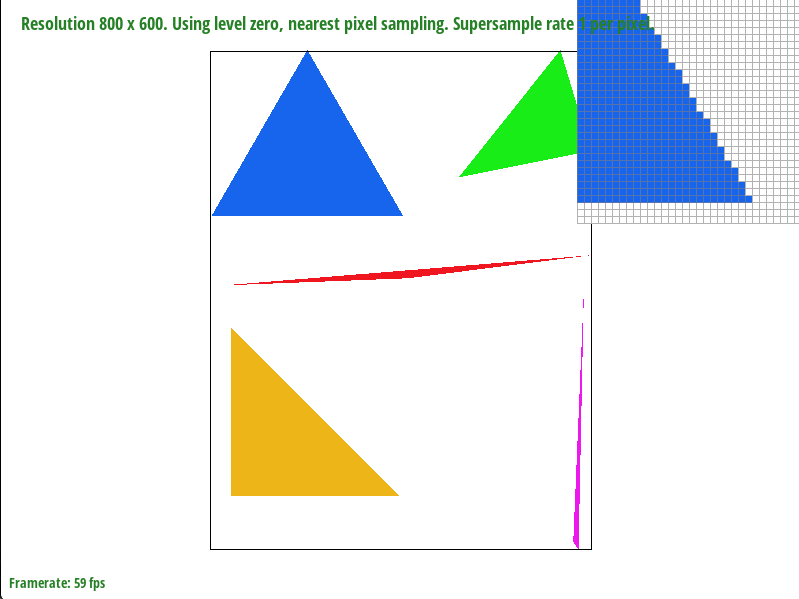
|
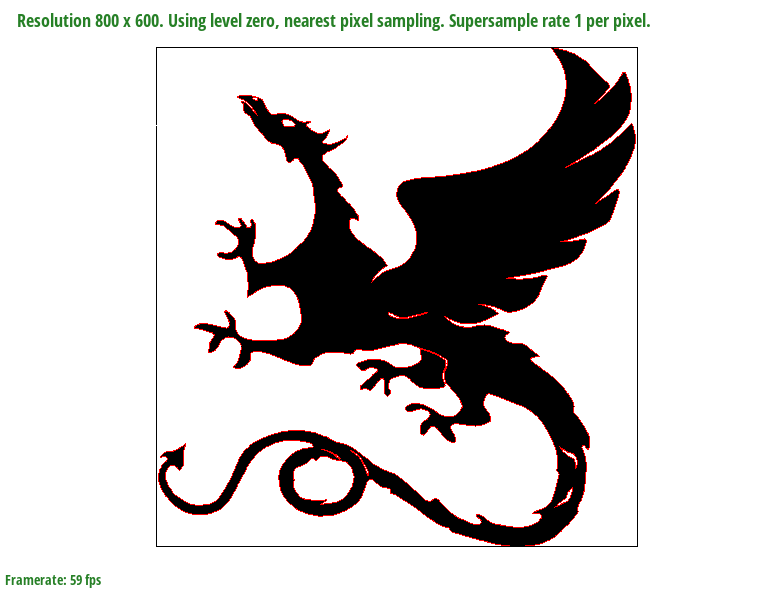
|
|
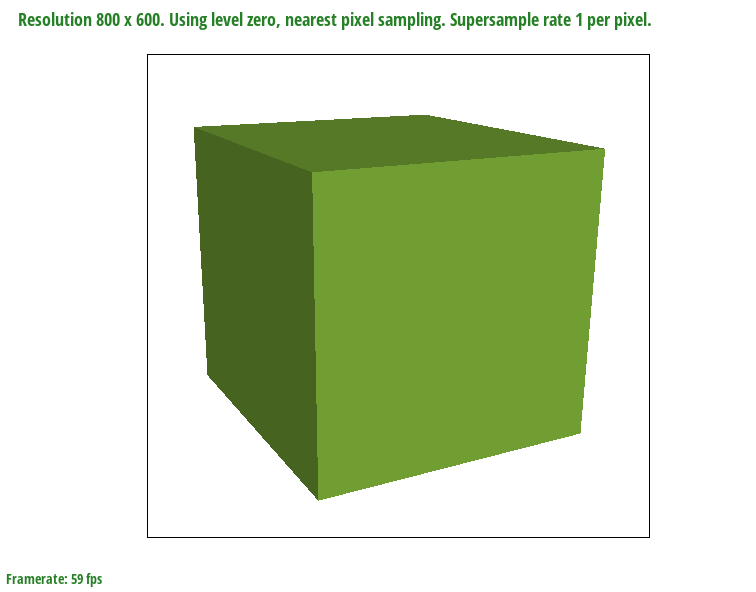
|
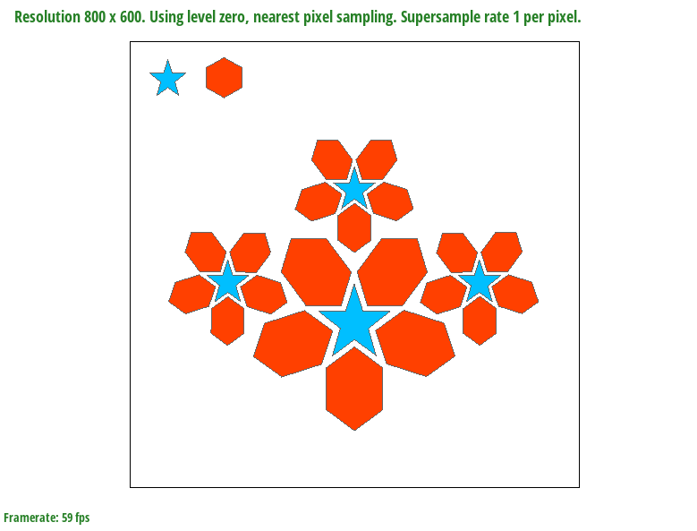
|
For this part I implemented supersampling to make a sharper and smoother image. Supersampling is sampling a certain amount of points on all pixels to rasterize a smooth image by averaging the colors on that pixel. For example, if my sample rate was set to 4 then I will be taking 4 samples from each pixel. We sampled at sqrt(sample rate) * sqrt(sample rate), so I used two nested for loops initiated at the value zero. I then proceeded by calculating the pixels offsets by using these equations, offsetX = (1 / sample rate)+ (x / sqrt(sample rate)) and offsetY = (1 / sample rate) + (y / sqrt(sample rate)). Where x and y are the initial variables from the two for loops all while they are less than sqrt(sample rate). Therefore, for each single pixel we will be sampling at positions (1/4, 1/4), (3/4, 1/4), (1/4, 3/4), and (3/4). This is because our sample rate is 4. If it were 9 then we would sample 9 positions. Once I found the tangent vectors to these new sample positions I checked if they fell inside the triangle. If they did, then in that case I kept a counter starting at zero which determined where in the supersample_Buffer(a 1D vector datastructure) the rasterzed point belonged in this vector. The counter would reset once I entered a new pixel. This was possible to integrate because I downsampled on the image width and height by the sample rate. Therefore, I had enough memory allocated to include these new sample points onto our 1D vector image. Once I stored all of the points inside the vector at their correct positions I had to resolve the frame buffer to produce the new image. I had to iterate through the width and height of my image and then had a while loop with a counter that would increment until it was equal to the sample rate. This while loop was used to extract the exact points from my supersample_Buffer. Inside this while loop I added all corresponding RGB values to average the color of the pixel from the amount of samples performed on that certain pixel. Therefore, removing aliasing artifacts such as jaggies from the image.
|
|
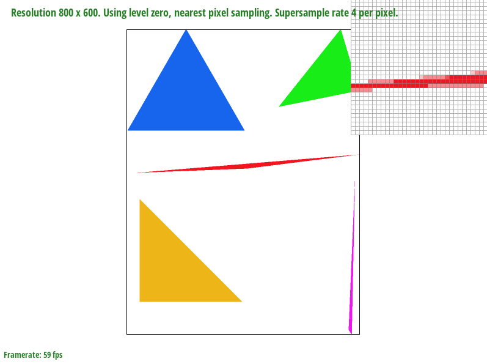
|
|
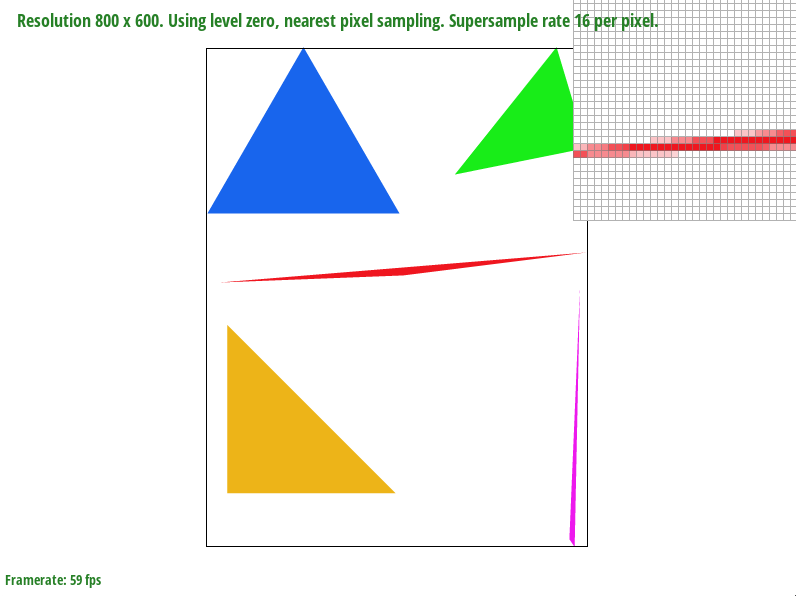
|
Here I worked with the Transforms for scale, translate, and rotate. Here cubeman is asking for a hug while lookinh to the left of him. Cubeman has dark hair and is sympathizing with the person cubeman is asking a hug for.
|
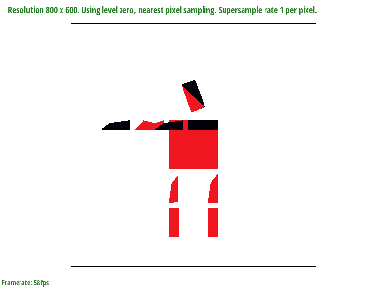
|
Barycentric Coordinates was used to interpolate across the entire triangle from its 3 vertices. Each vertex
holds a color that represents its RGB values. For example, if coordinate A was Red, coordinate B was Green, and coordinate C was
Blue then I would color across the trinagle by using this formula for alpha (-1 * (i + offSetX - x1) * (y2 - y1) + (j + offSetY -
y1) * (x2 - x1)) / (-1 * (x0 - x1) * (y2 - y1) + (y0 - y1) * (x2 - x1)) and this formula for beta (-1 * (i + offSetX - x2) * (y0 -
y2) + (j + offSetY - y2) * (x0 - x2)) / (-1 * (x1 - x2) * (y0 - y2) + (y1 - y2) * (x0 - x2)). Where i and j represent the pixel
position and the offsets are the extra sampling position if the sample rate is more than 1. I can then solve for gamma as 1 - alpha
- beta. Once I have alpha, beta, and gamma I can perform the distribution of color within the red, green, and blue parameters as
so.
Color t;
t.r = alpha * c0.r + beta * c1.r + gamma * c2.r;
t.g = alpha * c0.g + beta * c1.g + gamma * c2.g;
t.b = alpha * c0.b + beta * c1.b + gamma * c2.b;
Where c0 is the color across point A, c1 is the color acroos point B, and c2 is the color across point C. These
colors are mixed to get an overall color to use for the supersample_Buffer.
|
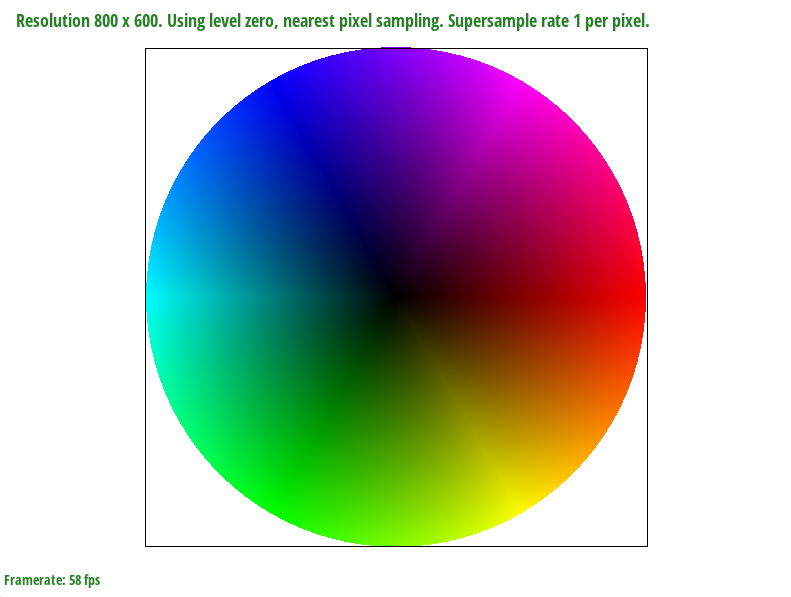
|
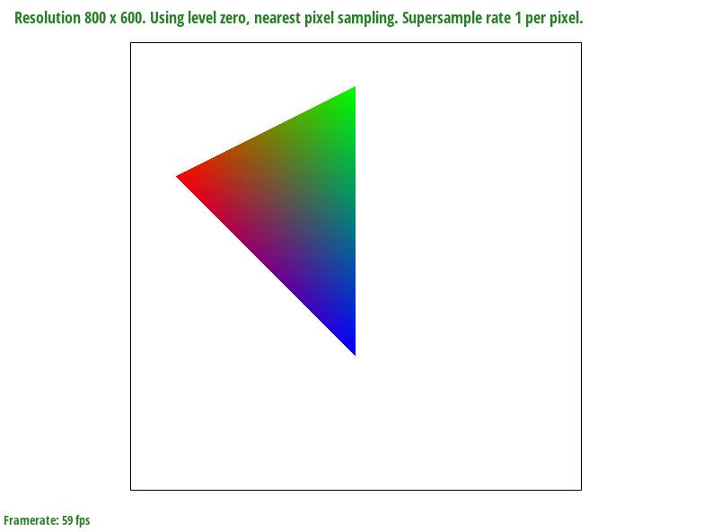
|
Pixel sampling is using (x, y) coordinate space to sample onto (u, v) texture space. For each coordinate space we have a coordinate texture space. Therefore, point A, B, and C respectively have a (u, v) coordinate that belongs in the texture space. I used Barycentric coordinates for texture mapping to receive the same type of smooth mixture between the texture samples from the 3 different (u, v) coordinates. For this implementation I calculated for alpha, beta, and gamma the same way as in Part 4. However, there is a differnece in distribution across the coordinates. In part 4 I used the RGB color values for points A, B, and C but for this part I will be using the u values across points A, B, and C to determine the x value in texture space. The same is done to find the y value in texture space. Once I find the (u, v) values in texture space I can then choose to sample using the Bilianer or Nearest methods. To use the Nearest method I will sample at the rounded values of u and v. With the rounded values I can then determine the type of texture coloring. Nearest method then returns this color that I acquired from the current mipmap level to apply to the (x, y) coordinate space. However, Bilinear method requires that I take 4 closest points that are near my (u, v) values. I find these points by taking the ceiling and floor of (u, v). I then have to find fractional offsets (s, t) in texture space to receive the diffence in mixtures of colors which is called Bilinear filtering. This is where I created a lerp function (a linear interpolation) to help with these calculations. I find two horizontal points from the 4 closest coordinate points using the lerp function. The lerp function finds the exact RGB values by using this formula mixed.r = v0.r + x * (v1.r - v0.r) respectively for R, G, and B. V0 and V1 represent 2 of the coordinate points found from taking the ceiling and floor of (u, v). This is done twice to receive the two new horizontal points. I then perform one last lerp function within these two new horizontal points to construct the new image.
|
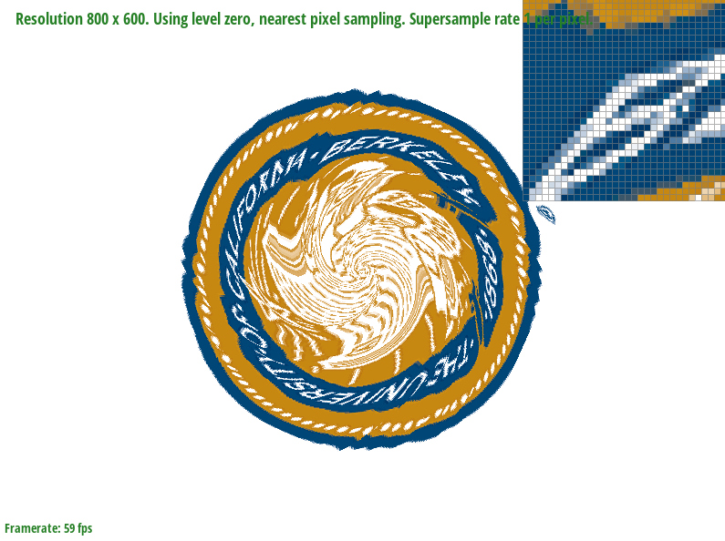
|
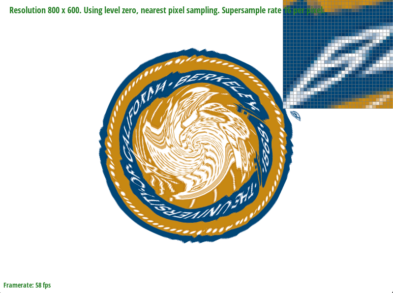
|
|
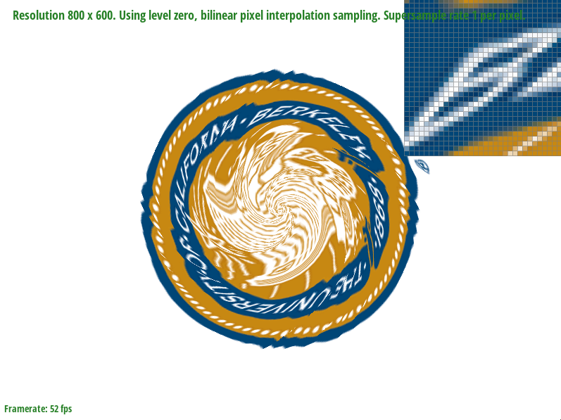
|
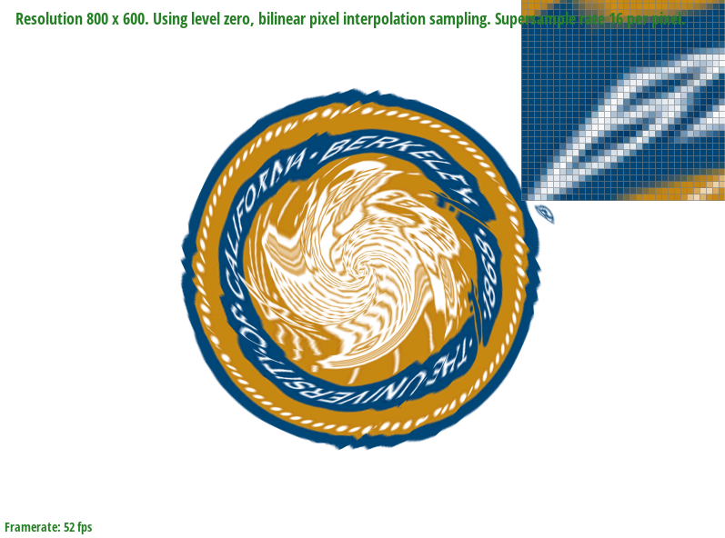
|
Here the top two images represent the Nearest sampling method. At sample rate 1 we see that the top left image has some pixelated scenes but at sample rate 16 (the top right image) the image is fixed through shading and averaging the pixel values. The bottom two images are much better and are represented through the Bilinear sampling method. The bottom left image at sample rate 1 is nearly the same as nearest at sample rate 16; however, since bilinear uses a blurry instance the different colored pixels seem to blend into each other to get rid of any sharp corners. At sample rate 16 Bilinear method looks a lot clearer. There is difinitely a difference in sample methods for images samled up close and with a lot of detail. When comparing the interaction of all the surrounding pixels the difference is that Bilinear captures more detail in the picture since we use 4 points approximate the color value.
Level sampling is using a mip hierarchy by taking the partial derivatives of the (x, y) coordinate screen points onto the (u, v) texture space. We know the level of the (u, v) texture space by taking the max of the squre root of (du/dx)^2 + (dv/ dx)^2 , square root (du/dy)^2 + (dv/dy)^2. Afer finding the max we take the log of base 2 to get the appropriate sample level. With the level found I am able to get the correct resolution from the images stored in the mipmap. This allows us for faster speeds and good memory usage in some cases. When using Nearest sampling with level zero there are artifacts on the image that need to be antialiased. This is somewhat fixed one we sample at levels near the partial derivatives of (x, y) and there is no differnece with bilinear leveling. As for bilinear sampling at level zero, there is rarely any artifacts that need to be antialiased. At nearest level sampling the image is completey smooth and this seems to stay the same at the bilinear level. The key main differneces between supersampling and bilinear sampling is that the computational speed of bilinear is faster than supersampling. However, when both are applied the image contains no artificats at the human eye. The same can be said with nearest sampling and supersampling but nearest sampling contains some jaggies. Therefore, it does not use a lot of memory in comparison to supersampling.
|
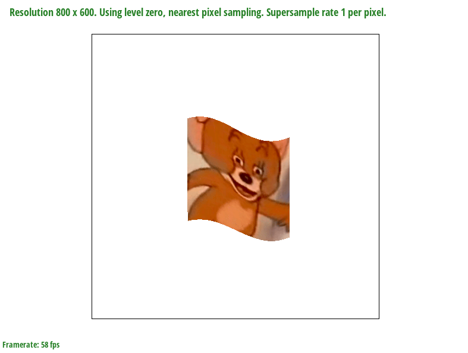
|
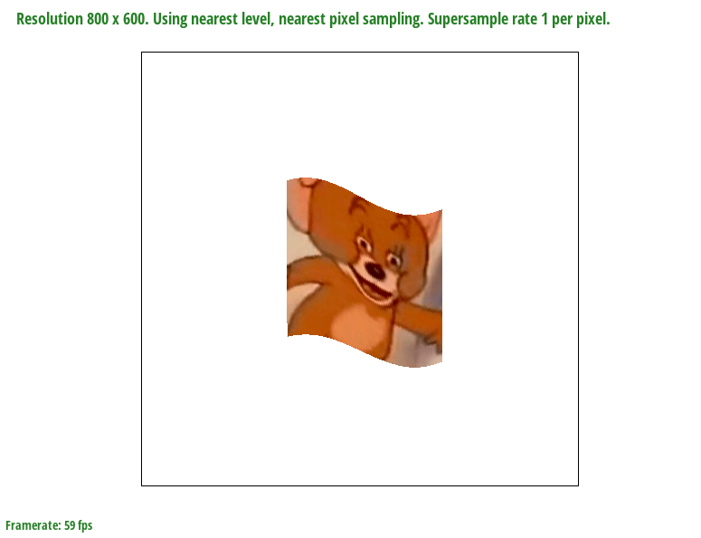
|
|
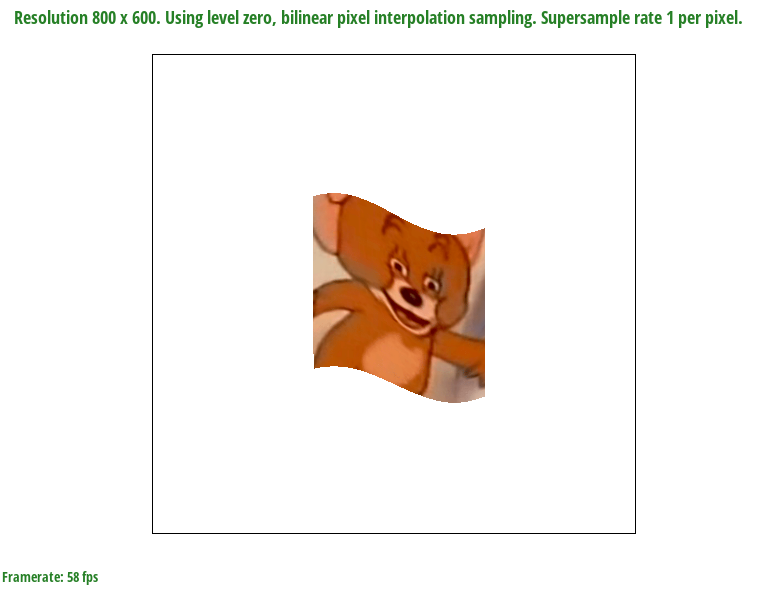
|
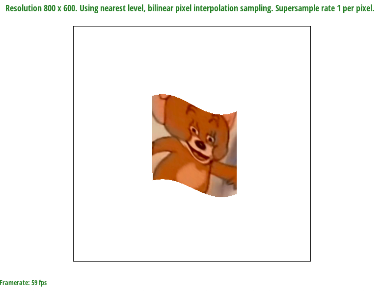
|
If you are not participating in the optional art competition, don't worry about this section!